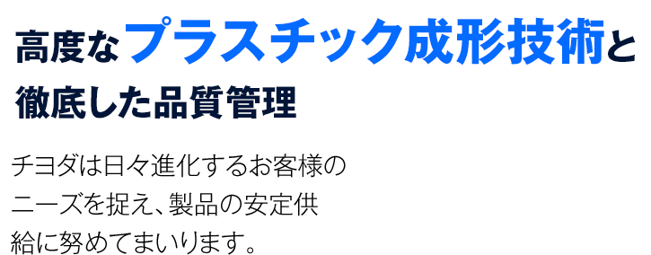
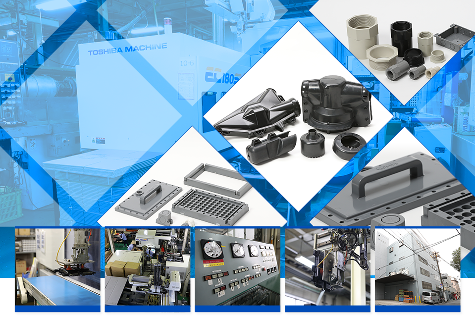
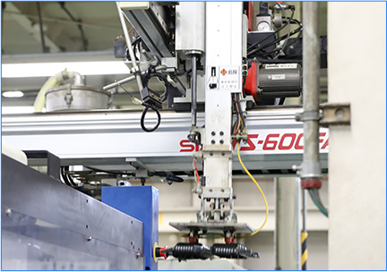
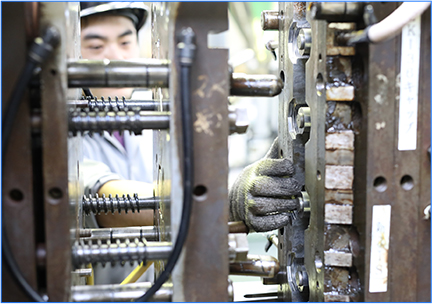
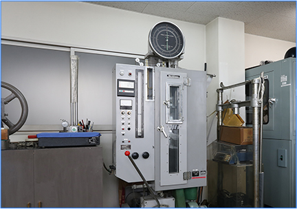
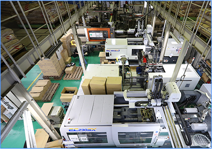
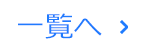

株式会社チヨダでは、硬質塩化ビニルの難加工性をものともしない技術力・ノウハウと万全の品質管理体制という強みを活かして、
お客様に高品質な製品を提供してまいりました。その中で何よりも大切にしてきたのは『手間を惜しまない丁寧な仕事』です。
熟練の職人が一つひとつ丁寧に心を込めて成形することで、お客様のご満足につなげております。
豊富な長所を持ちながら、成形の難しい硬質塩化ビニル。
硬質塩化ビニルを活かし、お客様のニーズにお応えいたします。
複雑な形状の製品を大量に生産できる射出成形。
高性能な機械を熟練の職人が扱うことで、
高品質な射出成形を行っております。
株式会社チヨダの強みは、“人の力”だけではありません。
大量に安定して生産できるように、
高性能な機器も積極的に導入しております。
当社にご依頼いただくお客様のご要望は、“品質”と“スピード”です。
高品質なのはもちろん、迅速にお客様のご依頼に
お応えできる環境も当社の大きな強みといえます。
複雑な形状の製品も生産できますので、
まずはお気軽にご相談ください。
- 
- 
- 
- 

- 2016/00/00
- テキストが入ります。テキストが入ります。テキストが入ります。テキストが入ります。テキストが入ります。テキストが入ります。
- 2016/12/07
- ホームページリニューアルしました。
- 2016/00/00
- テキストが入ります。テキストが入ります。テキストが入ります。テキストが入ります。テキストが入ります。テキストが入ります。